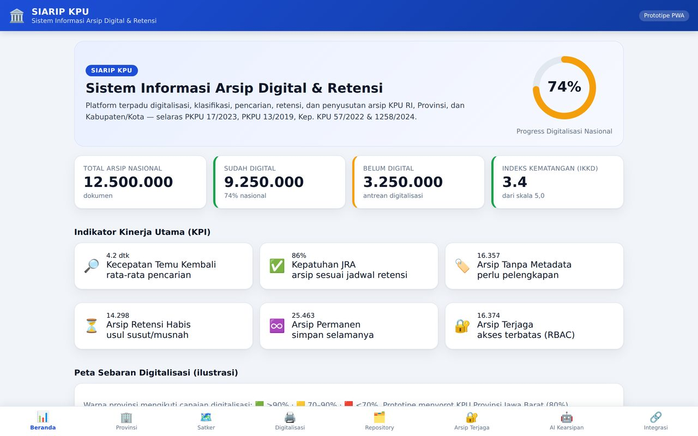
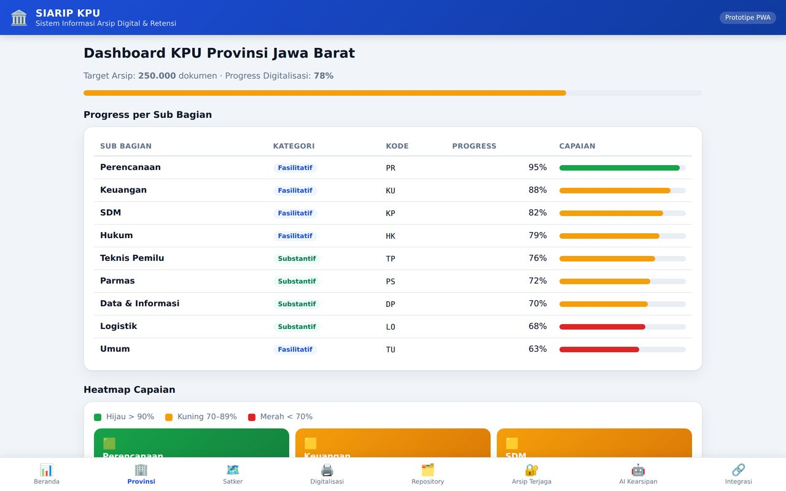
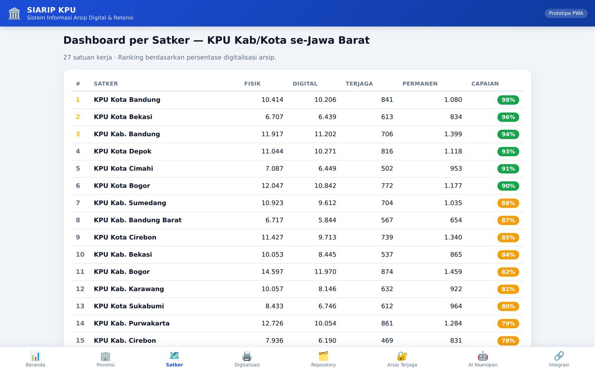
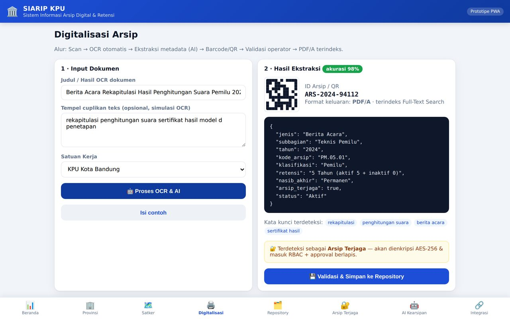
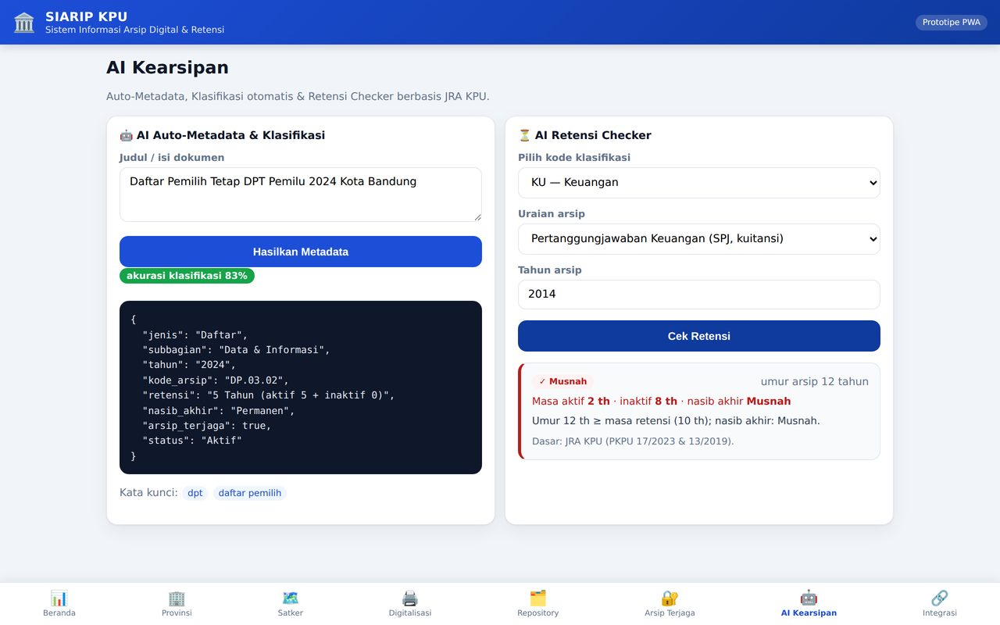
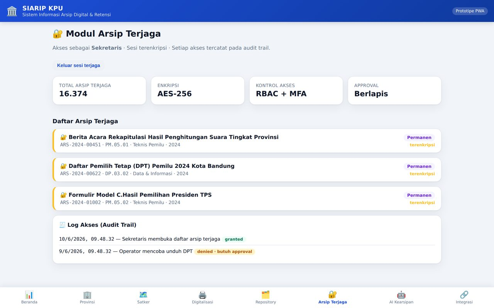
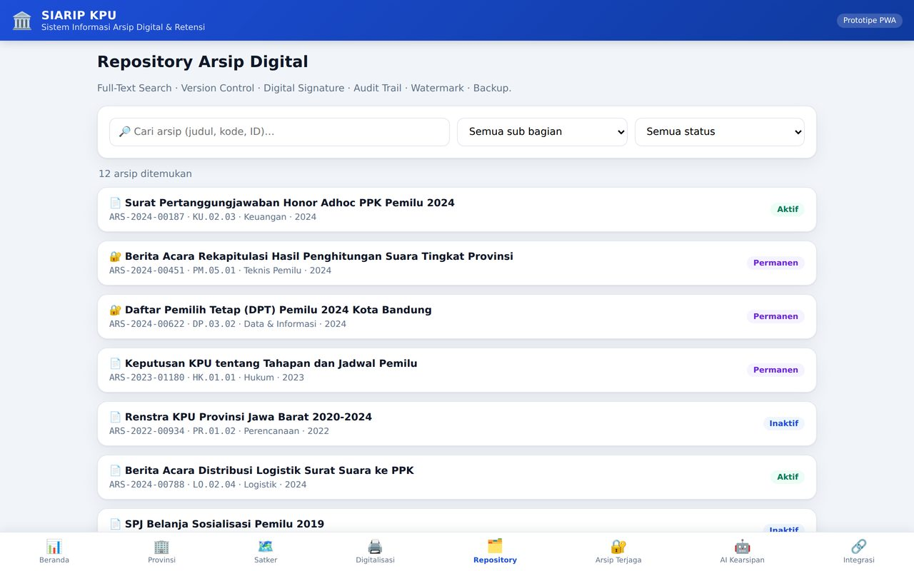
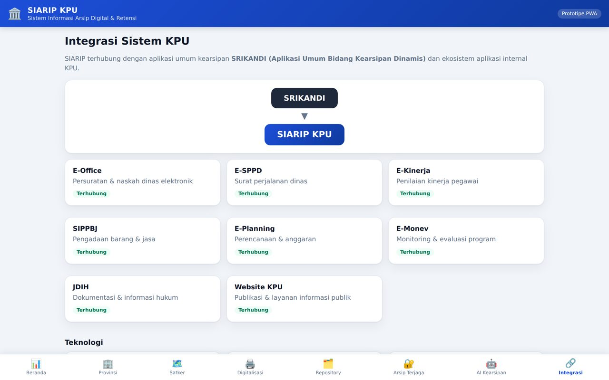

Galeri Aplikasi
Tangkapan Layar — Prototipe Berjalan
Seluruh gambar diambil langsung dari aplikasi yang berjalan (bukan mockup). Klik gambar untuk memperbesar.








Kapabilitas
Enam Modul Terpadu
01 · Digitalisasi Arsip
Scan, OCR otomatis, ekstraksi metadata, barcode/QR, validasi operator → PDF/A terindeks.
02 · Klasifikasi Otomatis
AI memilah arsip Fasilitatif & Substantif sesuai kode klasifikasi Kep. KPU 57/2022.
03 · Repository Terpusat
Full-text & semantic search, version control, digital signature, watermark, backup.
04 · Arsip Terjaga
Enkripsi AES-256, RBAC + MFA, approval berlapis, log akses — Kep. KPU 1258/2024.
05 · AI Kearsipan
Auto-metadata & Retensi Checker: rekomendasi Aktif/Inaktif/Permanen/Musnah berbasis JRA.
06 · Dashboard Monitoring
KPI berjenjang: nasional, provinsi, hingga ranking satker — satu sumber kebenaran.
Di Balik Layar
Teknologi & Dasar Hukum
⚙️ Teknologi
- PWA vanilla JS — installable, offline-first, tanpa dependensi runtime.
- Service worker network-first dengan fallback cache offline.
- Mesin AI on-device — klasifikasi keyword, auto-metadata, retensi checker (produksi: OCR + LLM + RAG).
- Arsitektur produksi — Next.js/Flutter · NestJS/Spring Boot · PostgreSQL + Elasticsearch · MinIO S3.
⚖️ Dasar Hukum
- PKPU 17/2023 — Jadwal Retensi Arsip KPU.
- PKPU 13/2019 — JRA Kepegawaian & Keuangan.
- Kep. KPU 57/2022 — Kode Klasifikasi Arsip & Pengkodean Naskah Dinas.
- Kep. KPU 1258/2024 — Pengelolaan Arsip Terjaga.
DigitalisasiOCRAuto-Metadata
JRA / RetensiArsip TerjagaRBAC
Full-Text SearchDashboard KPISRIKANDI
PWA Offline